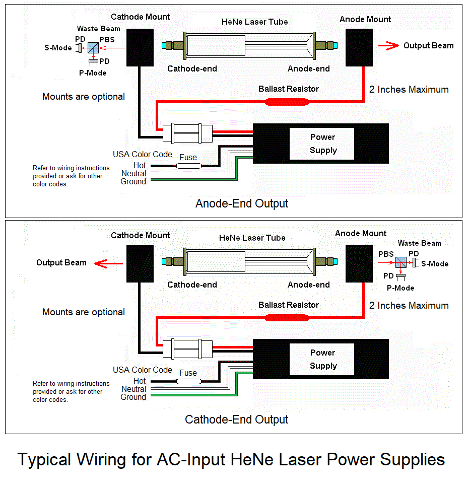

Instructions for Wiring AC-Input HeNe Laser Power Supply Bricks
This is detailed info on wiring 115/230 VAC input power supply bricks
with ballast resistor(s) and optional tube mounting brackets for use
with the high power HeNe laser kits including stabilized. The
diagrams below show
the general arrangement. It is critical that the polarity be correct.
The diagrams also show the polarizing beam sampler that
would be required for the stabilized laser kits (or for other
experiments).
Note that these power supplies may have an Alden connector for the tube.
A mating connector will be provided in that case. If there are only
the high voltage leads, there will be no Alden connectors.

Wiring the power supply
- Determine what color code is used for the AC wiring of the brick in the kit.
This is critical! I will generally provide this information via email or
an eBay message. There is some info at
Sample Color Coding of AC Input Power
Supply Bricks that covers most types/manufacturers. If not included
there and it's not obvious, please
contact me before doing something you may regret.
- An appropriate fuse should be included in the HOT wire to the power supply.
This is most often a 1 amp medium or normal blow fuse. It can be permanently
attached as the fuse should only blow if something bad happens inside the
power supply. A suitable fuse will be included with the kit, probably already
attached and insulated.
CAUTION: ALL INPUT WIRING MUST BE SECURED USING SOLDER, WIRE NUTS, OR
A SUITABLE CONNECTOR. DO NOT JUST WRAP THE WIRES TOGETHER. INTERMITTENT
CONNECTIONS BLOW STUFF.
Installing the tube
Examine the mirrors of the laser tube to determine the end for the main
beam. Most of these tubes from the output from the cathode-end but it can come
from either end. It can usually be determined easily without powering the
tube since there will be an AR coating
on the output-end mirror which appears blue-ish in reflected light. However,
in rare cases, there may be an AR coating on both mirrors.
Wiring using the brackets:
- If the output is from the cathode-end of the tube (as it is in most cases),
there should be hole already drilled in the cathode-end bracket so
the photons can escape. ;-) If not, it is possible to swap the two brackets
or drill a hole. But the bracket with the red wire and ballast resistor MUST
have the anode-end of the tube.
- Remove the adjustable attenuator plate (if present) from the original
anode-end mounting bracket (if present) by unscrewing the hex-head screw.
This plate can be used for other purposes like as a beam sampler.
- Attach the anode and cathode mounting brackets to a secure surface
spaced to permit the tube to just fit between them. For testing this
step can be postponed. Depending on how the tube will be used, one or
both brackets may be trimmed to free up space between them.
- Flip open the covers on the mounting brackets by pulling back on the
locking tabs.
- CAREFULLY lay the tube ends on the mounting brackets paying particular
attention to polarity: The positive has the fat red wire and receives the
anode (glass)-end of the tube; The negative has the fat black and receives the
cathode (aluminum can)-end of the tube. Make sure the anode-end bracket isn't
too cockeyed to permit the beam from getting out of the hole. :) Make sure the
tip-off (exhaust tube) at the cathode end clears the structure of the
bracket.
CAUTION: THE TUBE MAY APPEAR TO WORK WITH REVERSE POLARITY
BUT WILL PROBABLY BE RUINED IN A FEW MINUTES. Gently press the covers
in place so they click and are secure.
Take care to avoid stressing the fat red wires to the ballast resistor.
If either breaks off, it may be necessary to replace the ballast resistor.
Wiring using tube clips (if included, mostly for the various stabilized
lasers where special mounting may be desirable
- Cut the fat wires near the mounting brackets (retaining the ballast
resistor) OR use the separate fat red wire and ballast resistor(s) that
may be included.
- Solder tube clips to the wires.
- Carefully route and secure the wires so they don't stress the conections
at the tube.
- Gently press the clips onto the tube mirror mounts making sure they
go to the correct mount: The positive has the fat red wire and receives the
anode (glass) end of the tube; The negative has the fat black and receives the
cathode (aluminum can) end of the tube. Make sure the anode-end bracket isn't
too cockeyed to permit the beam to get out the hole. :) Make sure the
tip-off (exhaust tube) at the cathode-end clears the structure of the
bracket. CAUTION: THE TUBE MAY APPEAR TO WORK WITH REVERSE POLARITY
BUT WILL PROBABLY BE RUINED IN A FEW MINUTES.
WARNING: THE VOLTAGE BETWEEN THE ANODE AND CATHODE OF THE LASER TUBE MAY BE
GREATER THAN 5,000 V WHILE STARTING AND GREATER THAN 1,000 V WHEN RUNNING.
TOUCHING THIS WILL PROBABLY NOT BE LETHAL BUT YOU WILL FEEL IT AND PERHAPS
TOSS THE ENTIRE RIG ACROSS THE ROOM. :( SIGNIFICANT CHARGE WILL REMAIN
ACROSS THE TUBE AND POWER SUPPLY FOR SOME TIME AFTER INPUT POWER IS REMOVED.
USE A CLIP LEAD ACROSS THE TUBE TO DISCHARGE BEFORE TOUCHING ANYTHING TO BE
SAFE.